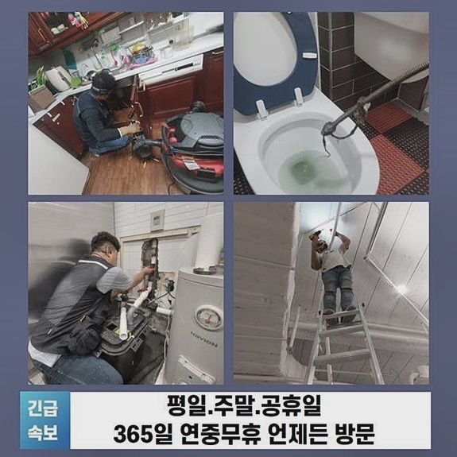
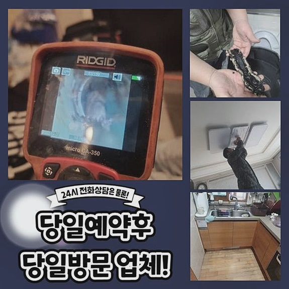
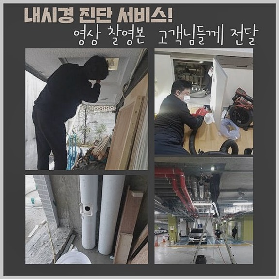
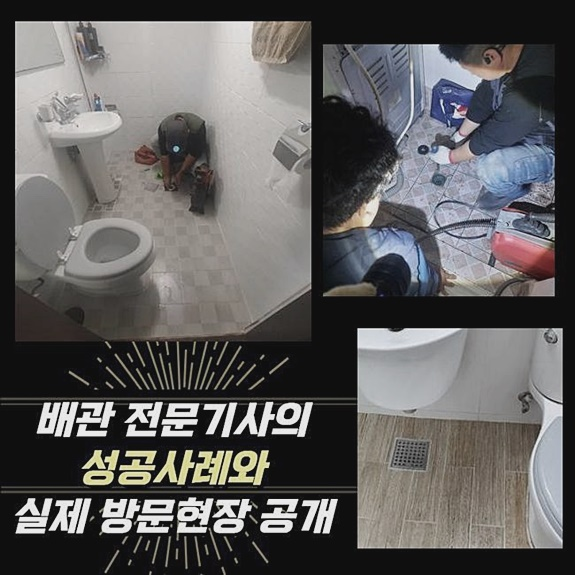
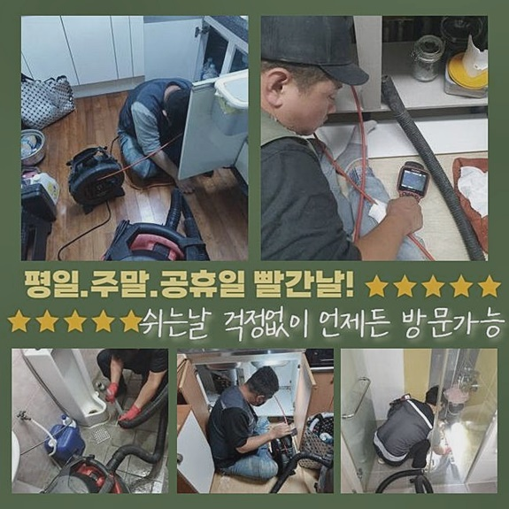
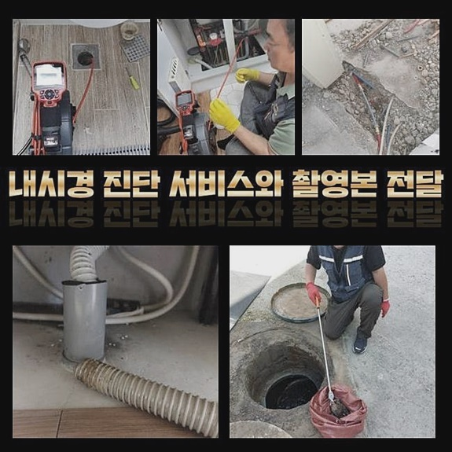
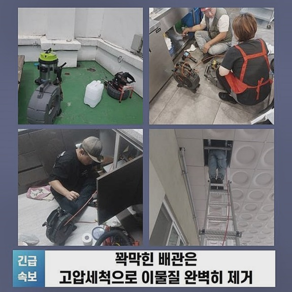

🏠 성남 도촌동하수도막힘 상대원동 배관내시경카메라 배관막힘뚫는업체
용인시 처인구 배관막힘 전문 시공 후기

📋 작업 개요
- 위치: 용인시 처인구, 수원시 영통구, 화성시 동탄
- 서비스 유형: 배관막힘, 고압세척, 내시경점검
- 작업 일시:
- 업체명: 하수구수사대 (010-5615-2118)
🔍 문제 상황
성남 도촌동하수도막힘 상대원동 배관내시경카메라 배관막힘뚫는업체
그저께 구형아파트단지에 주거하시는 분께서 배수관트러블에 기인한 다양한 말썽으로 전화해 주셨는데요
30년 가까이된 단지였고 생각지도 않게 고장이 터져버려서 매우 당황해 하셨습니다
물넘침까지 병행되는 현상은 이물질 적체가 심각한 상황까지 전개되었다는걸 뜻합니다
우리팀은 내방하기전 항상 다양한 변수들을 계산합니다
오래된 주거지는 배수관의 형태가 역류나 막힘 등에 약한 형태를 띠며 간혹 한지점에 설비되어 있는 경우도 있죠
이와같은 개별적 특성을 분석하면 우리팀이 마련해야할 기기구성도 달라질수 있답니다
그러하기에 뚫음시공을 단행하기 이전에 필수로 거주지의 배수시스템을 스터디하여야 해요
물세척 장비는 강한 물줄기를 일으킬수가 있으므로 관로의 내구력이 부족하다면 찢어질수도 있답니다
그렇기에 물세정 업무가 요망된다면 구간에 따라서 개별적인 압을 주는 소상한 행동이 필요하죠
고압노즐에 연유한 피해는 배관전체 교체와 같은 곤란한 상황을 촉발시킬수 있으므로 배관기술자의 조력을 받는게 바람직합니다
다양한 장비구성이나 숙련성이 결여된 의뢰인께서 해당문제를 처리하기는 상당히 힘겨워요
시공에 대한 공임을 절용하다 배수관에 금이라도 간다면 대체적인 시설물을 손봐야되는 모습이 나올수도 있겠죠

🔎 원인 분석
💡 전문가 진단: 정밀 진단 장비를 사용하여 슬러지의 고착 여부를 판명하고 타격/세척 작업을 실시했습니다.
되도록이면 기본적인 수리시도만 한다음에 해소가 까다롭게 느껴지시면 기술자를 수소문하는 것이 지출액을 감하게 해주는 방책이라 봅니다
금번에 방문하였던 처소는 구형의 주택단지라 배수관 보존에 많은 신경을 써야 했었죠
사태를 내버려두면 유해균이 증식하거나 구린내가 진동하는 등의 다채로운 사태들이 일어날수 있어 신속한 행동이 필수였습니다
고수압 세정방식은 하수관의 꺾인 부분까지 능률적으로 잔재들을 정리해내는 특징을 가집니다
일부분은 고착물의 분쇄 공구를 통해 단단해져 있는 폐기물들을 분리해낸 뒤 고압 물세척 과정을 감행하기도 해요
오랜시간 적층된 노폐물들은 고수압 클리닝으로도 잔류하기도 하는데 샤프트분쇄기를 집약적으로 이용하면 이물제거가 빠르게 정리되기도 해요
이러한 단계를 바탕으로 배관안의 물길을 속시원히 만들어내고 막힘을 방지할수 있어요
해당되는 시공은 건축물의 수명을 보전하는데에 참으로 중요한 역할을 담당하고 주기적으로 진행시키는 것이 합당합니다
본현장은 평상시 관리결손으로 나빠진 형편이라서 차후 일어날 가망성이 큰 관막힘 증상을 방예하려 주기적인 관리방안과 세척하는 방책또한 가르쳐 드렸답니다
배관 막힘은 일상을 괴롭게 몰아갈수 있으며 좀더 진행되면 이물 역류의 문제들로 위생상의 고초를 유발하기도 합니다
그것은 개인 생활의 질적 측면을 하락시키죠
그렇기 때문에 파이프고장이 나타나면 정밀하고 전문적 대응이 요청되죠
찌꺼기들은 배수관 전체에 분포되어 있거나 하수관 벽에 눌어붙어 상존할수도 있어요

🔧 작업 과정
화장실은 머리털 뭉치들이나 수분티슈가 많았고 주방은 부피가 큰 음식물 잔재가 많다고 볼수 있죠
통상 고수압 물세척은 특히나 도움을 많이 줍니다
고압세정은 공용 하수관이나 야외에 위치한 오물탱크쪽에서 고압의 물분사를 가동하여서 하수관 안을 세척하는 것입니다
잔재들이 누증된 배수관을 정결하게 만들기 위해선 고수압 세정방식은 필수라고 알립니다
우리와 같은 전문가들을 만나시면 소제작업을 한층 효과적으로 이행받으실 수 있어요
능숙하지 않은 업자가 담당한다면 진단시에 문제를 온전히 인지하기 힘겹고 작업의 결과물이 미흡해질수도 있습니다
우리들은 이러한 시공이력이 풍부하기에 형편을 제대로 살피고 올바른 행동을 진행할수가 있답니다
업무를 이어나가는 가운데 장기 정비를 하지 않아 의뢰인의 세대는 말할것도 없고 공동파이프 및 아래세대에까지 피해확산이 되어있었어요
대략적인 진단 및 수선이 불가피한 형국이었습니다
혹시나 작업일정이 지속해서 미루어지면 손실보상에 대한 예상치못한 말썽들도 마주할수가 있을거란 것을 설명해 드립니다
관에 누증된 찌꺼기에 연유한 말썽으로 예상할수 있었으며 배관전용 내시경을 활용하여 전체적인 관측을 진행했죠
배관카메라는 관의 곳곳을 정밀하게 탐색하고 무슨 행동을 해야할지 결단을 도와주는데요
내시경이 없다면 작업자의 손감각에만 집중하여 실시할수가 있으므로 정밀함이 낮아질수가 있답니다
연결된 화면을 통해서 이물들이 어느부분에 모아져있고 매립구조는 어떠한가에 관해 검열해야 완벽한 수리라고 칭할수 있는거죠
배관카메라를 통해 살펴보았더니 공동배수관에 여러모양의 잔재들이 공처럼 고정돼 있다는걸 인지할수 있었어요
벽면에 부착된 백회질은 단순하게 고수압청소만으로는 없애기 힘겹고 샤프트기계라는 전문 장비가 요망됩니다
일단 파이프 구조를 검사하고 이물질이 집약된 부위를 특정한 뒤에 파쇄장비를 동원해 정체를 해소시켰죠
분쇄 공정중엔 배관안에 부유하는 찌꺼기를 들어내고 배관을 청소하는 작업이 이행되었는데 절차 가운데 석션기기를 가동시켜서 관이 개운하게 이용되도록 조처했어요
배관막힘은 미미하게라도 포착되면 다채로운 문제들을 유발할 가능성이 있어 발빠른 진단이 요구돼요
본 현장의 경우엔 건물의 여러집에서 연속적으로 일어나게 되어 공사의 정도가 증가할수 있었기에 더욱더 신경써서 시공해야 했답니다


✅ 작업 완료
그러하기에 공사날짜에 구속되는 일없이 즉각적으로 수리를 계획하실 것을 권장합니다
우리팀은 주말이나 오전 9시 이전이라도 분께서 불러주시면 언제라도 내방갈 대비가 완성되어 있죠
사태가 급박하시다면 머뭇거리시지 말고 우리팀으로 전화주십시오
금번 방문지에선 심한 냄새가 올라오는 사태를 조사하였고 배수 흐름과 역류상황에 대한 분석까지 꼼꼼하게 알아보았는데요
만에 하나 시공에 성공하지 못할시엔 시공비를 청하는 일이 없으며 의뢰인의 과오가 없다는 가정하에서는 비용 청구없이 애프터서비스를 받아보실수도 있어요
신뢰감 넘치는 작업을 기반으로 손님께 만족할만한 성과를 내드리겠습니다




⚠️ 하수구 배관 막힘 예방 및 관리 가이드
- ✅ 머리카락, 비닐, 물티슈 등 물에 분해되지 않는 이물질은 절대 흘려보내지 마세요.
- ✅ 기름기 많은 식기는 설거지 전 키친타올로 먼저 기름때를 닦아내세요.
- ✅ 주기적으로 배수구에 뜨거운 물을 가득 부어주어 유지방 고착을 방지하세요.
- ✅ 작업 후 1년 이내 재발 시 무상 A/S 보증 서비스를 제공합니다.
💡 핵심 정리
- 확실한 장비 작업(내시경 점검 및 샤프트 스케일링)으로 원인을 뿌리 뽑습니다.
- 작업 후 1년 이내에 동일한 부위 재발 시 100% 무상 A/S 서비스를 보장합니다.
- 서울 · 경기 · 인천 전 지역에 24시간 언제든 긴급 출동할 수 있도록 항시 대기 중입니다.
❓ 자주 묻는 질문 (FAQ)
🚨 용인시 처인구 배관막힘 문제로 고민이신가요?
정확한 원인 진단과 확실한 시공으로 재발 없는 해결을 약속드립니다.
24시간 긴급 출동 | 서울 · 경기 · 인천 전지역 | 1년 내 재발 시 무상 A/S